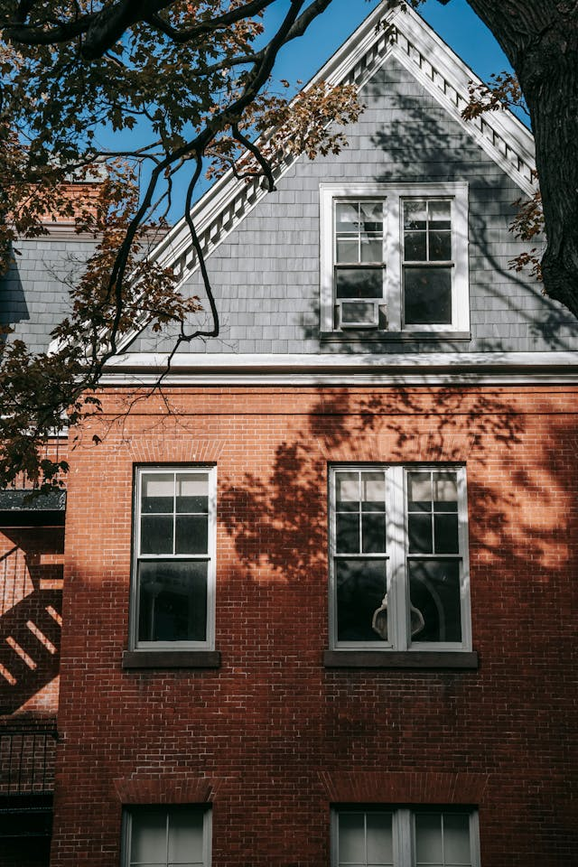
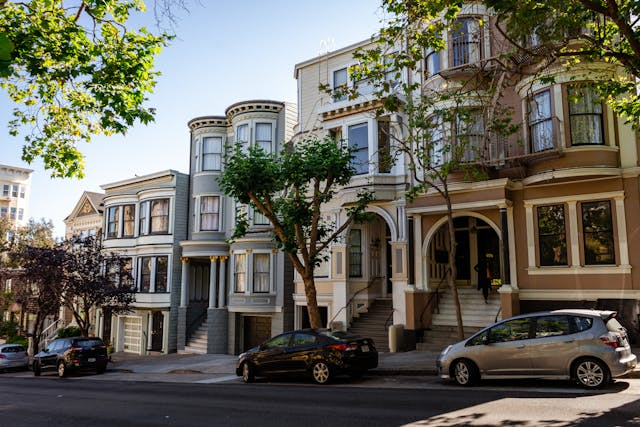
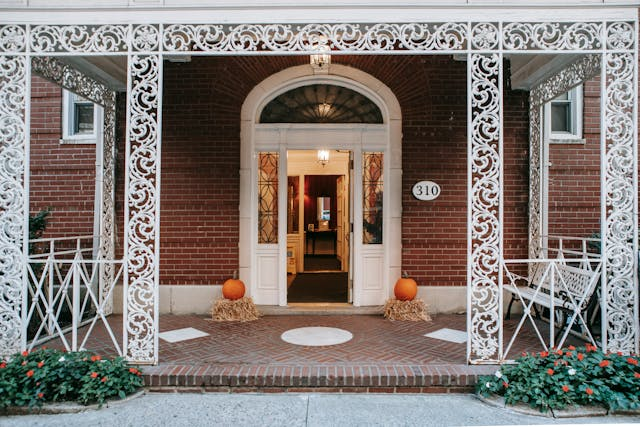

Projet proche du passé
Contruction de quatre maisons individuelle dans un secteur d'une ancienne usine. l'architecture à été penser pour se fondre dans l'environnement présent avant les travaux.
Projet mini-manoir
Construction de quatre maisons individuelle plus deux maisons en logement pour deux familles. Dans un quatier résidentiel style américain, ces mini-manoir en pierre claire donne un style et des courbes agréables au quartier.
Projet centre-ville
Reconstruction d'un immeuble en pierre. Dans le centre historique, avec tout les aménagements environnementaux actuelle, tous en gardent la façade qui fait partie du patrimoine histoprique de la ville.
Cette immeuble contient 20 appartements spaciaux et ensoleillé.
projet campagne paissible
Création d'un quartier avec 10 maisons individuelles avec un petit jardin. La construction est en pierre rouge foncer, avec un magnifique porche et ferre forger blanc!
